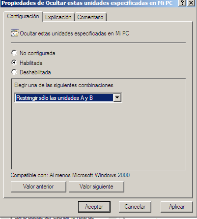

- Módulo: Sistemas Operativos
- Título del trabajo A1: PDC WinServer directivas
- Componentes del grupo: Alejandro García Yumar
- Curso Académico: 2013/2014
- Fecha de entrega: 12 de mayo de 2014
Quitar el menú Ejecutar del menú Inicio
Prohibir el acceso al Panel de control
Ocultar el icono Mis sitios de red del escritorio
Quitar el icono Mis sitios de red del menú inicio
Quitar Conexiones de red del menú Inicio
Ocultar unidades específicas en Mi PC/p>

Habilitar Quitar “Desconectar de unidad de red”
Un ejercicio muy facil con el unico inconveniente de no saber que documento modificar si no tienes documentación.